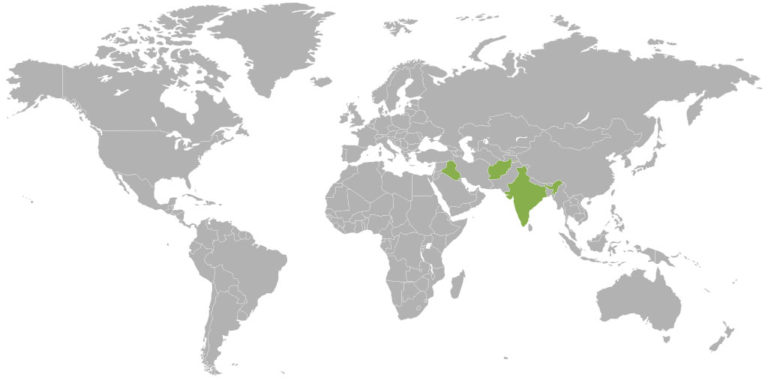
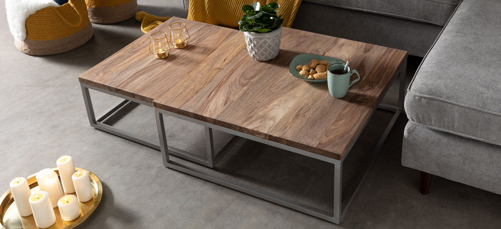
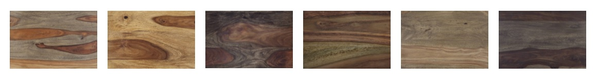

What is Sheesham called also Rosewood
Why it is so populat? What makes it a good material for furniture? Learn more about one of the most popular wood species in furniture industry.
Sheesham, Rosewood, Latin name "Dalbergia sissoo". This tree has many names. The tree species can be found in the south of Asia and are even found there as a coat of arms tree.
Sheesham / rosewood in portrait
-
Home: Rosewood or sheesham trees can only be found in certain countries such as India, Iraq or Afghanistan. They bear brown fruits that are not edible.
- Size: Rosewood or Sheesham trees grow up to 25 meters high and have a diameter of up to 3 meters.
- Special feature: Sheesham wood has a very strong and concise grain.
- Furniture made of sheesham wood: Sheesham furniture is particularly expressive. This is due to the wood pattern and the deliberate gluing of sapwood and heartwood.
- Sustainability: Sheesham is a fast growing raw material. Our sheesham wood comes from controlled and responsible plantation cultivation.
- Worth knowing: Sheesham is the state tree in the Indian state of Punjab and even serves as a heraldic tree in the Pakistani province of Punjab.

Sheesham or Rosewood, which is the correct name?
Sheesham wood is also called Indian rosewood. The Indian rosewood shares the name with the protected tropical rosewood. Sheesham trees can, however, be used for furniture production and can also be exported - unlike the protected tropical rosewood. The Washington Convention on Endangered Species regulates the exact requirements relating to the export of sheesham. In order to avoid confusion, we always speak of sheesham or Indian rosewood when referring to the furniture in our shop.
Fast and without a break: This is how sheesham wood grows
The natural occurrence of sheesham trees is preferred near water, especially on sandy or gravel-rich soils. Indian rosewood does not like lofty heights - it feels most comfortable under 900 meters. Sheesham wood is often cultivated in plantations. This also applies to all of the sheesham wood that we use for furniture production. The regional distribution already suggests that sheesham trees can tolerate rain. The deciduous tree does not mind up to 2,000 mm of precipitation per year. On the contrary: the Dalbergia sissoo stores heavy precipitation - for example during the monsoons - for dry periods.
Thanks to the warm temperatures in India, sheesham trees also grow all year round. Unlike trees in our climes: they stop growing in the cold season. This is how the classic annual rings are created. Due to the lack of seasonal rhythm, Indian rosewood has a special grain. Fuzzy rings stretch across the surface of the wood. They indicate individual growth cycles - and give the wood its strong and tropical-inspired expression.

Sheesham wood: elegant look thanks to the characterful grain
With its varied wood pattern, Sheesham makes a real statement. While the inside, the so-called heartwood, of the Dalbergia Sissoo has a golden to dark brown base tone, the outer layers of wood, the sapwood, are more white to light brown.
We skillfully use these visual differences in our furniture designs: The multi-faceted image, the diverse play of colors and the breathtaking 3D effect are created by gluing together sapwood and heartwood. In short: Sheesham is a type of wood that stands out with its optics!
Maintaining sheesham wood: this is important
In order to preserve the incomparable appearance of Sheesham, it makes sense to rely on the right wood care. In general, the following applies: The maintenance should be depending on the finish. Lacquered wood has different maintenance requirements than oiled wood.
The open-pored structure is retained with oiled wood. The oil can soak into the wood and saturate the wood fiber from the inside out. Lacquered furniture is sealed.
Have you discovered unsightly marks on your piece of furniture? Then you will find all the necessary information in the blog post Remove stains on wooden furniture. We have also summarized how you fight woodworms and remove scratches.
Refined sheesham wood: Indian rosewood as a versatile eye-catcher
So diverse and yet similar - our solid furniture made of sheesham wood shows how exciting furnishings made of natural wood can be. All sheesham collections have in common the lively and high-contrast wood image that marks the surface. However, the color design of the furnishings makes a significant difference.
This only gets its charm through the treatment. The wood is refined either by oiling or varnishing. Our designers match the individual color selection to the overall appearance of the collection. More modern lines and metal elements harmonize well with light color nuances. Classic pieces of furniture unfold their effect especially in combination with dark tones.
